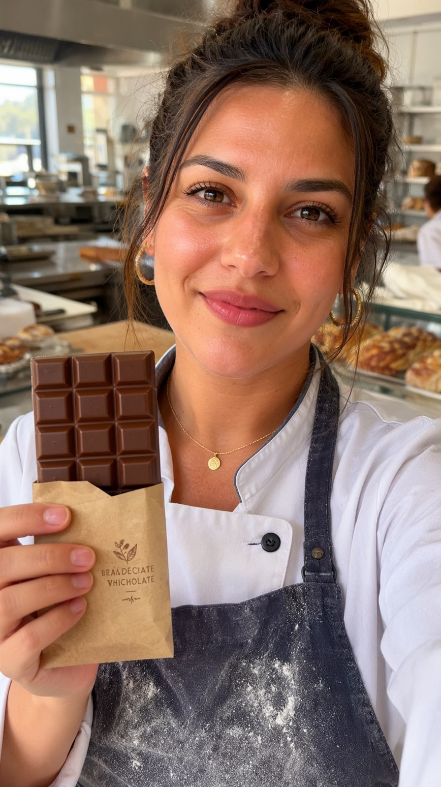
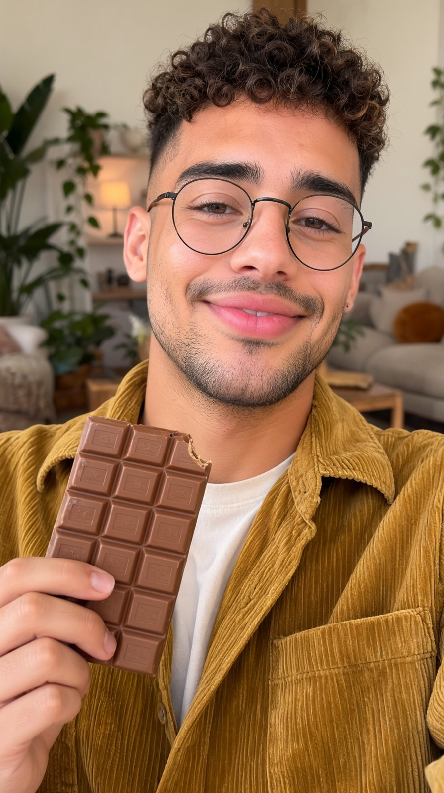
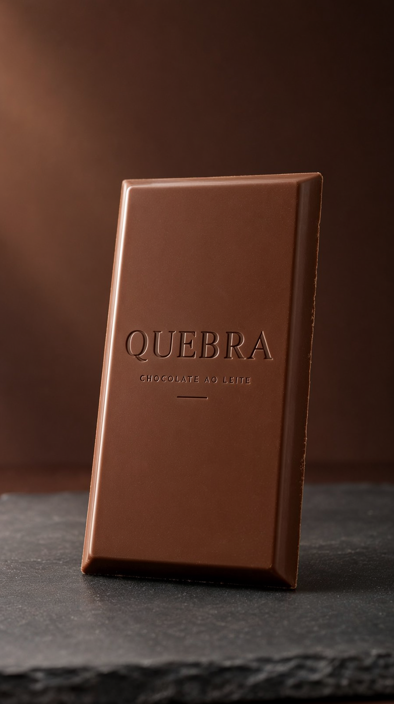
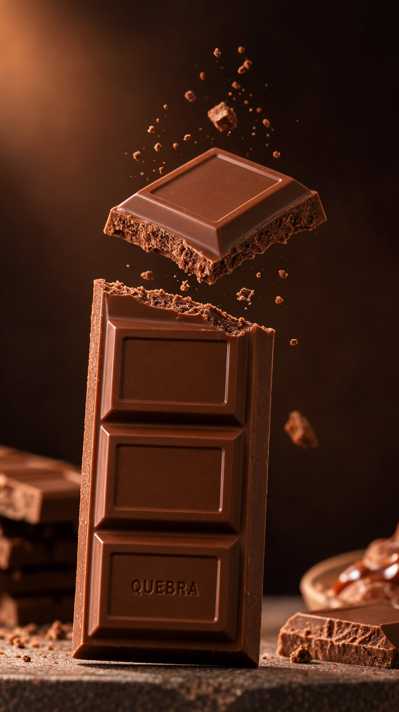
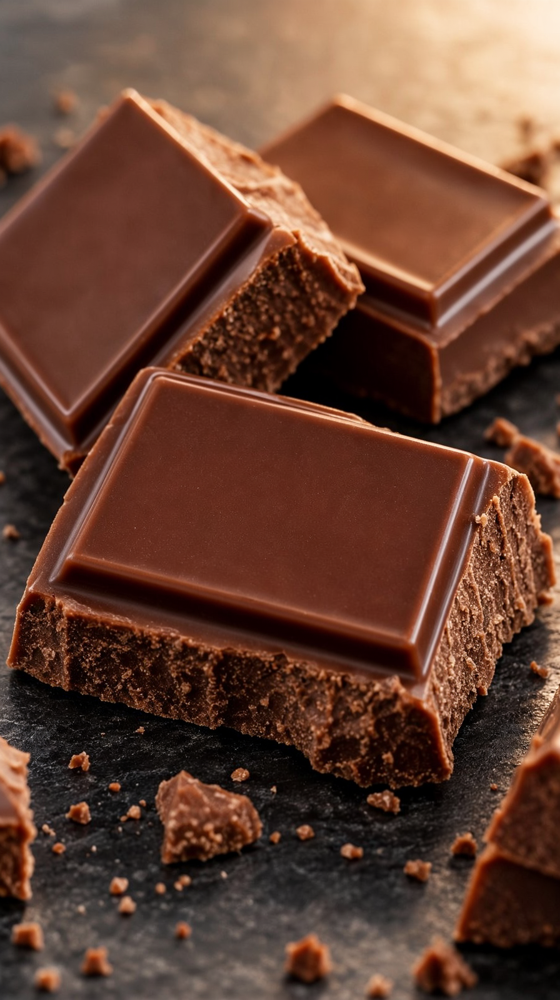

A rodada foi atrás de lugares nunca pesquisados: busca direta no Hugging Face (que driblou o bloqueio da Civitai e revelou um LoRA de física espacial para o H3), ModelScope, destilados alternativos. Testes controlados deram vereditos honestos — inclusive negativos. Produto: QUEBRA, chocolate ao leite — o snap perfeito, com física auditada em queda.
Territórios novos → o que renderam
| Território | Achado | Veredito |
|---|---|---|
| Busca direta na API do Hugging Face (novo método — dribla o login da Civitai) | JojoCodex spatial-physics-lora (H3, 23k downloads, Apache-2.0) — colisões, gravidade, quique; + fal realism já em uso; + Acc-LoRAs oficiais da Alibaba | Testado em A/B controlado: snap de chocolate com LoRA 8/10 vs H3 puro 9/10 — o H3 já acerta este regime; arquivado como negativo honesto (fica para cenários de colisão múltipla) |
| ModelScope (espelho chinês) | API de busca inoperante (404) | ✗ Sem resultado nesta sessão |
| Distilados alternativos do Wan 5B (Perflow DMD) | Formato peft/.pt, fora do padrão ComfyUI | ✗ Não aplicável sem conversão |
| Realism Wan 2.2 no HF | p5ych3d = arquivo modificado do 14B | ✗ Não serve para o 5B |
Os entregáveis · 1080×1920 · 10,0 s · LUFS −14





O estado da série
| v10 (LUZ) | v11 (SOSSEGO) | v12 (QUEBRA) | |
|---|---|---|---|
| Atuação | Duda com traços (energia) | Rafa 10/10 (LoRA + calma) | Nina & Téo 9/10 — padrão estável |
| LoRAs testados | 0 | fal realism (positivo) | + physics (negativo honesto) — banco de vereditos |
| Física destaque | viscoso | chama | queda/impacto (snap auditado 9/10) |